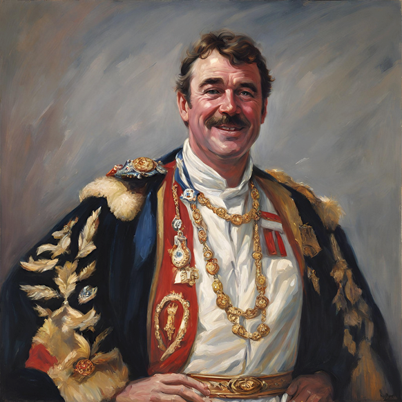

William Elio Scott Chester Somerset, 2nd Viscount Douglas (formerly William Scott-Chester) is the son of Elio Somerset, 1st Viscount Douglas.
William Elio Scott Chester Somerset, 2nd Viscount Douglas (formerly William Scott-Chester) is the son of Elio Somerset, 1st Viscount Douglas.He has served in 5 previous parliamentary terms, and has held various roles from Downing Street Chief of Staff to Deputy Prime Minister.
During his term as Chancellor of the Exchequer, he passed the June Budget Act 2023, which enabled the introduction of the largest economic reform in the Empire's history. His term was characterised by mass reform and policy introduction, and large-scale invigoration of the corporate sector

Augustus Edward Xeres Lleyton, 1st Earl of Stirling, is a former Prime Minister of the Empire of Great Britain, serving in the 28th Session of parliament. He consistently represents Stirling as an MP.
He is a dedicated and passionate individual, who channels his energy into his work in governance excellently.
He is a dedicated and passionate individual, who channels his energy into his work in governance excellently.

Thomas Humphrey Wright arrived in the Empire in May 2023, and has since been a significant figure in the region. In the most recent session of parliament, he represented East Devonshire, debating and voting upon every bill in the commons.
He served as home secretary during the 28th Session, promoting unity and stability within the government, embodying the core principles of his party.
He served as home secretary during the 28th Session, promoting unity and stability within the government, embodying the core principles of his party.